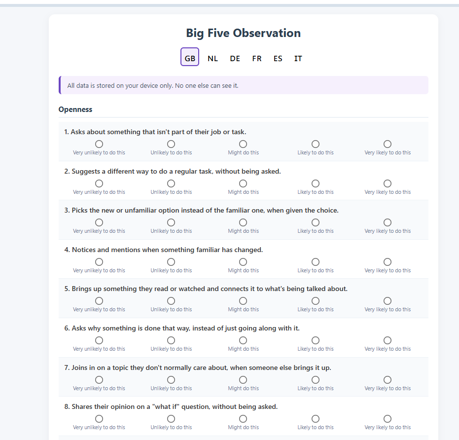

Aus all diesen Gründen habe ich ein Programm ins Leben gerufen: A Second Look: Perspective Change und Personal Reorientation Through Dive Training. Es ist ein ganz normales Divemaster-Traineeship, ergänzt um einfache, erprobte psychologische Übungen unter Anleitung des Divemaster-Trainee-Mentors, die Ihnen helfen, Ihre Erfahrungen bestmöglich zu nutzen. Es ist keine Therapie, sondern eine Möglichkeit, sich bewusst zu machen, was Sie gerade tun, was Sie lernen und wie Sie sich dabei verändern.
Das sind ganz grundlegende psychologische Werkzeuge, und sie fügen sich natürlich in das Programm ein. Wir betrachten Persönlichkeit nicht als Etikett, sondern als Muster, und wir vergleichen, wie Sie sich selbst sehen, mit dem, wie andere Sie tatsächlich sehen. Wir schauen uns kulturelle Unterschiede an, damit Ihnen bewusst wird, dass man Dinge auf ganz unterschiedliche Weise angehen kann, ohne dass die eine Art richtig und die andere falsch wäre. Wir arbeiten mit den drei kognitiven Verzerrungen, die Ihnen beim Versuch, sich zu verändern, am meisten im Weg stehen. Und wir nutzen die Rational-Emotive Verhaltenstherapie, eine einfache, gut erprobte Technik, um Ihnen echte Einsicht darin zu geben, warum Sie auf Ihre Umwelt so reagieren, wie Sie es tun – und um Ihnen einen konkreten Weg an die Hand zu geben, das zu verändern.
Wir bitten alle in der Gruppe, das dort Geteilte vertraulich zu behandeln – das ist keine Regel, die wir durchsetzen können, sondern nur eine Bitte, und fast alle respektieren sie, weil sie ja auch ihre eigene Geschichte teilen. Der Mentor lenkt die Gruppe sanft von allem weg, was zu persönlich ist, zu roh, oder zu leicht zu bereuen, wenn man es mit Menschen geteilt hat, mit denen man nächste Woche noch gemeinsam tauchen wird.
Noch wichtiger: Ein Mentor, der diesen Teil des Programms leitet, wird darin geschult, den Unterschied zu erkennen zwischen einem normalen, manchmal emotionalen Moment der Einsicht – von denen dieses Programm reichlich bietet – und etwas, das darüber hinausgeht: einem echten Trauma, das eindeutig mehr braucht als eine Gruppe und ein gutes Gespräch. Wenn ein Mentor diese Grenze erkennt, unterbricht er die Übung sofort, behutsam, an genau diesem Punkt, und sagt unmissverständlich, dass dies einer Fachperson bedarf, nicht uns. Das heißt nicht, dass wir Sie im Stich lassen. Es heißt, dass wir genau wissen, wo unsere Kompetenz endet.
Persönlichkeit: die Big Five
Persönlichkeit ist ein stabiles Muster, wie jemand denkt, fühlt und sich verhält – über verschiedene Situationen hinweg und über Jahre hinweg. Sie ist keine Stimmung, die ja nur von kurzer Dauer ist. Menschen neigen dazu, Persönlichkeit in Typen zu beschreiben: er oder sie sei ein „typischer Extrovertierter“. So funktioniert es in der Realität überhaupt nicht. Nach Jahrzehnten der Forschung hat sich gezeigt, dass sich Menschen tatsächlich auf fünf Skalen voneinander unterscheiden, und auf jeder Skala kann man niedrig bis hoch punkten. Zudem ist jede Skala unabhängig von den anderen – der Wert auf einer Skala sagt also nichts über den Wert auf den anderen Skalen aus.
Selbsteinschätzung und 360-Grad-Feedback
Schauen wir uns zunächst an, was die fünf Skalen sind:
Offenheit — wie sehr Sie sich zu neuen Ideen, neuen Erfahrungen und abstraktem Denken hingezogen fühlen, im Vergleich dazu, wie sehr Sie das Vertraute, Konkrete und Bewährte bevorzugen. Wer hier hoch punktet, wird ohne Neues unruhig und liebt Kunst, Ideen, Reisen und das Hinterfragen von Dingen. Wer niedrig punktet, ist deshalb nicht weniger intelligent — er findet einfach Geborgenheit und Verlässlichkeit im Bekannten und verspürt keinen starken Drang zum Unerprobten.
Gewissenhaftigkeit — wie organisiert, diszipliniert und zielgerichtet Sie sind, im Vergleich dazu, wie spontan und flexibel. Wer hier hoch punktet, plant voraus, bleibt am Ball und hält seine Umgebung in Ordnung. Wer niedrig punktet, arbeitet eher in Schüben, erträgt Unordnung und Ungewissheit besser und kann sich anpassungsfähiger zeigen, wenn Pläne durcheinandergeraten — hat aber auch eher Mühe mit Durchhaltevermögen und Fristen.
Extraversion — woher Sie Ihre Energie beziehen. Wer hier hoch punktet, tankt Kraft aus Menschen, Aktivität und Reizen — die Nähe anderer tut gut, während Ruhe oder Alleinsein irgendwann als anstrengend empfunden werden können. Wer niedrig punktet, tankt in die entgegengesetzte Richtung auf — soziale Interaktion kostet Energie, und das Alleinsein füllt sie wieder auf. Dabei geht es nicht um Schüchternheit oder Selbstvertrauen; auch wer niedrig punktet, kann sich sozial vollkommen wohlfühlen und es trotzdem als ermüdend erleben.
Verträglichkeit — wie sehr Sie Harmonie und Kooperation in den Vordergrund stellen, im Vergleich dazu, wie bereit Sie sind, Reibung in Kauf zu nehmen, um zu sagen, was Sie tatsächlich denken. Wer hier hoch punktet, ist warmherzig, vertrauensvoll und meidet Konflikte — solche Menschen ziehen es oft vor, mitzugehen, statt Spannungen zu erzeugen. Wer niedrig punktet, ist skeptischer, direkter und kann offen widersprechen, ohne dass es ihm unangenehm ist.
Neurotizismus — wie leicht Sie sich von Stress, Sorgen oder negativen Gefühlen mitreißen lassen, im Vergleich dazu, wie stabil und ausgeglichen Sie unter Druck bleiben. Wer hier hoch punktet, empfindet stärker und reagiert empfindlicher auf Rückschläge — das ist keine Schwäche, sondern ein Nervensystem, das „heißer“ läuft. Wer niedrig punktet, bleibt unter demselben Druck gelassener, auch wenn das manchmal so wirkt, als würden ihn Dinge weniger berühren, die ihm eigentlich wichtig sein sollten.
Um es ganz klar zu sagen: Kein Wert ist „gut“ oder „schlecht“ — sie sind einfach nur Beschreibungen.
Wir stellen Ihnen online ein Tool zur Verfügung, mit dem Sie sich selbst auf diesen fünf Dimensionen einschätzen können. Das gibt Ihnen einen ersten Einblick, wie Sie typischerweise auf Ihre Umgebung reagieren. Noch interessanter ist der Blick darauf, wie andere Sie tatsächlich sehen — ob Ihr Bild von sich selbst also mit dem Bild übereinstimmt, das die Menschen um Sie herum von Ihnen haben. Deshalb bitten wir nach einem Monat im Programm, wenn man Sie tatsächlich kennengelernt hat, ein paar Personen — Ihren Mentor, ein paar Mit-Trainees —, denselben Test über Sie auszufüllen (und Sie tun natürlich dasselbe für sie). So entsteht ein 360-Grad-Bild: wie Sie sich selbst sehen, neben dem, wie Sie tatsächlich auf Menschen wirken, die Sie einen Monat lang glücklich, müde, souverän und gereizt erlebt haben. Auch das dient keinerlei Beurteilung, sondern einzig dazu, Ihnen Einblick in sich selbst zu geben.
Hier ein Beispiel aus dem Tool, das Sie verwenden werden:

Das hier sind nur erfundene Daten, aber sie zeigen, welche Informationen dieses Tool liefert. Wie Sie sehen können, habe ich ein deutlich positiveres Bild von mir selbst als andere von mir haben. Ich bin nicht so offen, gewissenhaft, verträglich oder emotional stabil, wie ich denke – andere sehen das anders. Ich bin außerdem viel extravertierter, als ich selbst glaube. Besonders bei der emotionalen Stabilität sind sich die beiden anderen einig, dass ich deutlich weniger stabil bin, als ich selbst annehme. Interessante Informationen, die wir im echten Leben weiter erkunden können.
Wir werden das gemeinsam mit Ihnen in einer persönlichen Sitzung erkunden und diese Informationen tatsächlich im Programm nutzen.
Persönlichkeit als Verhalten: die Big Five im echten Leben

Es lohnt sich auch, tatsächlich auszuprobieren, ob Sie diese individuellen Unterschiede in der Art erkennen können, wie Menschen handeln und sich verhalten. Das macht Sie viel besser darin, Menschen zu „lesen“, was den Umgang und die Zusammenarbeit mit anderen leichter und lohnender macht. Sie erhalten ein Werkzeug, das Verhaltensweisen je Skala auflistet. Nehmen Sie sich die Zeit, tatsächlich einen Schritt zurückzutreten und ganz systematisch Menschen zu beobachten – das wird überraschend viel Spaß machen und aufschlussreich sein.
Persönlichkeit: die Lücke
Hier werden wir über die Persönlichkeitsdaten nachdenken. Nach einigen Wochen, in denen Sie Fragebögen für sich selbst und andere ausgefüllt haben und andere Fragebögen für Sie ausgefüllt haben, konnten Sie individuelle Unterschiede auch systematisch beobachten. Sie beginnen nun, die Kluft zwischen dem, was wir alle über uns selbst denken, und dem, was andere von uns denken, zu erkunden. Das machen wir mit der Foto-Übung weiter unten sowie in einem Gespräch mit dem Mentor und ein oder zwei wichtigen Bezugspersonen.
Wir werden dabei auf Erkenntnisse aus der Forschung zu kognitiven Verzerrungen sowie auf die Rational-Emotive Verhaltenstherapie zurückgreifen.
Kulturelle Unterschiede
Ein wichtiger Teil des Erfolgs dieses Programms ist die Gelegenheit, mit Menschen aus unterschiedlichen Kulturen in Kontakt zu treten und unter kontrollierten Bedingungen selbst in einer anderen Kultur zu leben. Wir haben ein Tool entwickelt, mit dem Sie sich dieser Unterschiede bewusst werden und sie nutzen können, um über Ihre eigene Situation nachzudenken.
In den 1960er- und 70er-Jahren zeigte Forschung aus Dutzenden Ländern, dass sich Kulturen konsistent entlang einer Handvoll messbarer Dimensionen unterscheiden – keine vagen Stereotypen, sondern Muster, die sich tatsächlich in den Daten zeigen, Land für Land, Jahrzehnt für Jahrzehnt. Diese Dimensionen sind hier von Bedeutung:
Machtdistanz. Wie sehr Menschen akzeptieren, dass ein Vorgesetzter Macht über sie hat. Hoch: Menschen gehorchen, ohne Widerspruch. Niedrig: Menschen erwarten, gefragt zu werden, und Vorgesetzte müssen sich Respekt verdienen, statt ihn vorauszusetzen.
Individualismus. Ob Menschen sich selbst oder die Gruppe an erste Stelle setzen. Hoch: persönliche Ziele und Meinungen stehen im Vordergrund. Niedrig: Familie, Team oder Gemeinschaft stehen an erster Stelle, sogar vor dem, was man selbst möchte.
Geschlechterunterschiede. Wie streng eine Kultur „hart und wettbewerbsorientiert“ den Männern und „fürsorglich und sanft“ den Frauen zuschreibt. Hoch: Männer wetteifern und wollen etwas erreichen, Frauen kümmern sich, und wer davon abweicht, fällt auf. Niedrig: die Unterschiede zwischen den Geschlechtern sind gering
Bedürfnis nach Sicherheit. Wie sehr Menschen einen festen Plan und einen einzig richtigen Weg brauchen, um sich wohlzufühlen. Hoch: Menschen wollen klare Regeln und werden ohne sie unsicher. Niedrig: Menschen kommen auch gut zurecht, wenn sie in Ungewissheit improvisieren müssen.
Wir haben ein einfaches Vergleichsdiagramm erstellt, in dem Sie Ihr eigenes Land als Ausgangspunkt wählen können (so sehen wir das nun einmal alle, das lässt sich nicht ändern) und es neben das Land stellen, in dem Sie gerade ausgebildet werden, oder das Land Ihrer Kursteilnehmer oder Ihrer Mit-Trainees – bis zu vier gleichzeitig –, um die tatsächlichen Zahlen Seite an Seite zu sehen.
Jeder dieser Werte beschreibt etwas, das Sie vor Jahrzehnten übernommen haben, lange bevor Sie alt genug waren, um irgendetwas davon zu hinterfragen – genauso, wie Sie Ihre Sprache gelernt haben: einfach dadurch, dass Sie jahrelang von ihr umgeben waren, ohne etwas anderes zum Vergleich, und ohne dass Ihnen je gesagt wurde, dass irgendetwas davon eine Wahl war und nicht einfach so, wie die Dinge nun einmal sind. Jetzt haben Sie die Gelegenheit, einen Schritt zurückzutreten und etwas Abstand zu gewinnen.

Das sind reale Daten. Ich bin Niederländer, deshalb habe ich die Niederlande als Ausgangspunkt gewählt. Auf den ersten Blick fällt auf, dass die Geschlechterunterschiede in meiner niederländischen Kultur viel weniger ausgeprägt sind als in den übrigen Ländern. Die niederländische Kultur hat auch kein besonders großes Bedürfnis nach Sicherheit … aber Großbritannien braucht noch weniger.
Auch diese Information können Sie nutzen, um mehr über sich selbst zu erfahren und etwas mehr Abstand zu gewinnen, und genau das tun wir auch im Programm.
Kognitive Verzerrungen
Wir alle interpretieren die Welt um uns herum und erfinden Geschichten darüber, wie die Dinge sind und welche Rolle wir dabei spielen. Meistens sind diese Geschichten nicht „wahr“, ja nicht einmal die logischsten, wirksamsten oder angenehmsten für uns. Das Problem ist: Wir erzählen uns diese Geschichten, um die Dinge zu vereinfachen, um sie verständlich zu machen – die Welt ist viel zu kompliziert, um wirklich alles zu verstehen. Selbst Sie sind sich viel zu kompliziert, um sich selbst zu verstehen. Aber Sie erfinden automatisch Geschichten, damit Sie damit zurechtkommen. Uns ist kaum bewusst, dass wir das überhaupt tun – wir glauben tatsächlich, die Welt „so, wie sie ist“ zu erleben. Aber das stimmt NIEMALS.
Wissen Sie, Wahrheit spielt für die Überlebensmaschine, die Ihr Gehirn im Grunde ist, keine wirkliche Rolle. Wenn die Wahrheit dem Überleben im Weg steht oder viel zu aufwendig zu ermitteln ist, dann lässt man sie eben beiseite. Die Wahrheit kann viel zu deprimierend sein, um sich ihr direkt zu stellen, oder sie ist einfach irrelevant. Sich selbst etwas vorzumachen, um sich wenigstens einigermaßen gut zu fühlen, und schnelle Entscheidungen zu treffen, die meistens halbwegs brauchbar sind, hat sich ausgezahlt – und genau das erzeugt diese Verzerrungen.
Da kann also einiges schiefgehen, und das passiert auch häufig. Der einzige Weg damit umzugehen, ist, sich bewusst zu machen, dass Sie sich tatsächlich Geschichten erzählen, um sich einreden zu können, die Dinge zu verstehen. Der nächste Schritt besteht dann einfach darin, die Geschichten zu verändern, die Sie unglücklich machen und Ihre Entwicklung behindern.
Die erste Möglichkeit dazu ist ein Blick auf kognitive Verzerrungen. Eine kognitive Verzerrung ist ein systematischer Denkfehler, der dazu führt, dass Menschen Informationen falsch interpretieren und irrationale Urteile fällen. Diese Verzerrungen prägen, wie Menschen die Wirklichkeit wahrnehmen, und können dazu führen, dass verschiedene Personen dieselben Fakten unterschiedlich deuten. Sie haben wahrscheinlich schon Listen davon gesehen, die beweisen, dass Sie nicht so klug sind, wie Sie vielleicht denken. Wir werden mit den drei Verzerrungen arbeiten, die für die Selbstentwicklung im Rahmen der Divemaster-Ausbildung am relevantesten sind.
Bestätigungsfehler
Sie suchen immer nach Belegen dafür, dass Sie recht haben, und ignorieren Hinweise darauf, dass Sie sich irren könnten.
Wir neigen dazu, Dinge wahrzunehmen, die unsere Geschichten bestätigen, und einfach zu ignorieren oder umzudeuten, was nicht dazu passt. Ich werde Ihnen jetzt gleich beweisen, dass Sie genau das tun, während wir hier sprechen.
Ich gebe Ihnen eine Zahlenreihe, und Sie müssen die dahinterliegende Regel erraten. Dann müssen Sie eine Zahl nennen, um zu prüfen, ob Sie die richtige Regel gefunden haben. Los geht's.
2 4 8 16 32
Nun würde jeder normale Mensch sagen: „64“, weil einem ständig auffällt, dass sich die Zahlen einfach verdoppeln. Und tatsächlich, 64 ist richtig, ja, das kann die nächste Zahl sein. Also sagen Sie: Man verdoppelt einfach die Zahl! Nein, Sie liegen falsch, das ist NICHT die Regel. Indem Sie mich fragen, ob 64 stimmt, können Sie diese Regel gar nicht überprüfen. Sie müssen nach einer Zahl fragen, die KEIN Doppeltes ist. Sie sollten nicht bestätigen, sondern versuchen zu widerlegen. Sie hätten fragen sollen: „63?“ oder Ähnliches. Wenn ich Nein sage, können Sie etwas sicherer sein, dass Verdoppeln die Regel ist. Aber tatsächlich sage ich: „Ja, 63 ist auch richtig.“ Jetzt wissen Sie ganz sicher, absolut sicher, dass die Regel NICHT das Verdoppeln ist. Beachten Sie: Die Frage nach 64 hätte Ihnen diese Information überhaupt nicht geliefert. (Die Regel lautet tatsächlich: Die nächste Zahl muss nur größer sein, das ist alles. Ich habe Sie hereingelegt, so wie die Welt es ständig tut.)
Diese Verzerrung ist extrem gefährlich, denn sie verleiht Ihnen eine Sicherheit, die auf nichts beruht. Dieser Bias kann sogar sehr erfahrene Piloten dazu bringen, auf einem Rollweg voller wartender Flugzeuge landen zu wollen. Sehen Sie sich dieses faszinierende Video dazu an:
https://youtu.be/bLEGir9lzBo?t=705
Wenn Bestätigungsfehler selbst extrem erfahrene und extrem gut ausgebildete Piloten dazu bringen können, alle Tatsachen wegzuerklären, dass ein Rollweg (mit Absicht, wie ich hinzufügen möchte) nicht einmal wie eine Start- und Landebahn aussieht, welche Chance haben dann wir im normalen Leben, in der komplizierten Wirklichkeit? Nicht viel, aber wir müssen versuchen, uns wenigstens bewusst zu machen, dass die Geschichte, die wir uns selbst erzählen, vielleicht nicht wahr ist, und dass wir vielleicht etwas besser nachprüfen können.
Sie sehen, das ist nichts Vages oder Mystisches.
Der entscheidende Punkt ist: Sie müssen sich immer fragen:
„Was, wenn mein Bild von der Welt oder von mir selbst nicht ganz zutrifft?“
Und dann aktiv nach Belegen suchen, die Ihrer gewohnten Geschichte widersprechen. Um es ganz klar zu sagen: Das Ziel ist nicht „positiv zu denken“. Das Ziel ist, sich ein genaueres Bild von sich selbst in seiner Umgebung zu verschaffen, indem man versucht, auf Dinge zu achten, die den eigenen Vorstellungen widersprechen. Wenn Sie glauben, „Ich kann nicht gut mit Menschen umgehen“, werden Sie ganz natürlich Dinge bemerken, die dies „beweisen“: Ihnen fallen die unangenehmen Gespräche auf, während Sie die Momente übersehen, in denen andere das Gespräch mit Ihnen genossen haben. Wenn Sie glauben, „Ich stecke in meinem Leben fest“, werden Sie all das beachten, was „beweist“, dass Sie feststecken, und die Gelegenheiten übersehen, die sich Ihnen zur Veränderung bieten könnten. Hier kommen die Beobachtungen anderer aus den Big Five ins Spiel: Sie geben Ihnen ein besseres, objektiveres Bild davon, was Sie tatsächlich tun und wie andere auf Sie reagieren. Im Programm bringen wir Ihnen bei, gezielt nach Dingen zu suchen, die Ihre Vorstellung von sich selbst widerlegen.
Fundamentaler Attributionsfehler
Ihre Erfolge verdanken Sie Ihrer Kompetenz, und Ihre Misserfolge sind Pech – aber die Erfolge der anderen waren nur Glück, und deren Misserfolge beruhen auf Unfähigkeit.
Wenn wir selbst versuchen, etwas zu erreichen, sind uns unsere Absichten voll bewusst. Wir beurteilen das Ergebnis an diesen Absichten. Scheitern wir, dann waren immerhin unsere Absichten gut, und es war wahrscheinlich vor allem Pech, dass es nicht geklappt hat. Wenn wir andere betrachten, haben wir keine Ahnung von deren Absichten. Wir können nicht in ihre Köpfe hineinschauen, also betrachten wir nur die Ergebnisse ihres Verhaltens. Scheitern sie, dann lag es daran, dass sie etwas falsch gemacht haben. Wir beurteilen uns selbst also nach unseren Absichten, andere aber nur nach ihren Ergebnissen. Und das führt dazu, dass wir glauben, wenn wir selbst keinen Erfolg haben, war es hauptsächlich Pech – scheitern aber andere, dann liegt es daran, dass sie Idioten sind, die nicht wissen, was sie tun.
An sich ist das ein sehr nützlicher Verzerrungseffekt, denn er sorgt dafür, dass Sie sich gut fühlen, selbst wenn Sie scheitern. Und wissen Sie was: Manchmal haben Sie damit sogar recht. Das soll nicht heißen, dass Sie in manchen Dingen nicht tatsächlich Experte sind und es tatsächlich besser wissen. Aber diese Verzerrung lässt Sie glauben, Sie hätten immer recht. Und der Preis dafür ist, dass Sie weniger aus Ihren Fehlern lernen (es war ja nur Pech, da gibt es nichts zu lernen) und dass Sie anderen Menschen nicht genug zutrauen, um mit ihnen zusammenzuarbeiten und, was noch wichtiger ist, aus deren Fehlern zu lernen (sie haben sich schließlich als Idioten erwiesen). Halten Sie das lange genug durch, landen Sie irgendwann bei der Vorstellung, Sie seien der einzige halbwegs kompetente Mensch in einer Welt voller Narren.
Sich in ein neues Umfeld zu begeben, in dem es andere Menschen gibt, die es tatsächlich besser wissen, gibt Ihnen die Gelegenheit, diese Verzerrung zu erkennen und Ihnen die Chance zurückzugeben, die Freude am Zusammenarbeiten mit anderen und am Lernen von ihnen wieder zu erleben.
Scheinwerfer-Effekt
Man überschätzt stark, wie sehr andere Menschen das eigene Handeln bemerken, bewerten oder sich daran erinnern.
Als Mensch, der Zugang zu all dem hat, was in Ihrem eigenen Kopf vorgeht, sind Sie ziemlich mit sich selbst beschäftigt. Das müssen Sie auch sein, um zu überleben. Der Denkfehler liegt aber darin, dass Sie annehmen, andere seien genauso sehr mit Ihnen beschäftigt wie Sie selbst. Sind sie nicht. Auch sie sind mit sich selbst beschäftigt und haben weder Zeit noch Interesse, Sie und die Details Ihres Lebens zur Kenntnis zu nehmen. Ja, Sie sind erwachsen und wissen das eigentlich – aber der Punkt ist, dass Sie vermutlich immer noch massiv überschätzen, wie viel Aufmerksamkeit man Ihnen tatsächlich schenkt.
Es gibt faszinierende Experimente, bei denen Menschen mit einem Verkäufer interagieren, für ein paar Sekunden abgelenkt werden, und in genau diesen Sekunden der Verkäufer durch eine andere Person mit anderen Haaren und anderer Kleidung ausgetauscht wird. Die meisten Menschen bemerken davon überhaupt nichts.
https://youtu.be/VkrrVozZR2c?t=110
Und zu Recht bemerken sie diese Dinge nicht. Unsere Fähigkeit, Informationen zu verarbeiten, ist begrenzt, und wir können unmöglich jedes einzelne Detail in jeder einzelnen Situation beachten. Der Punkt ist: Es besteht eine gute Chance, dass Sie sich mit Gedanken darüber quälen, was andere von Ihnen halten, was Sie gesagt oder getan haben ... während diese in Wirklichkeit überhaupt nicht an Sie denken, geschweige denn an das, was Sie gesagt oder getan haben. Sie sind viel zu sehr damit beschäftigt, sich Sorgen darüber zu machen, was andere von ihnen selbst denken ...
Es gibt noch eine weitere amüsante Demonstration des Spotlight-Effekts, und in ihr spielt der denkbar uncoolste Barry Manilow die Hauptrolle. Forscher ließen Studierende ein T-Shirt mit einem großen Foto von Barry Manilow tragen. Barry Manilow war vorab getestet worden und galt für diese Gruppe als peinlich – er war Ende der 1990er-Jahre alles andere als eine coole Campus-Ikone. Ein Student mit diesem Shirt betrat dann einen Raum mit ein paar anderen Studierenden, und nach wenigen Minuten verließ er ihn wieder. Und jetzt kommt der Trick.
Der T-Shirt-Träger wurde gebeten zu schätzen, wie viel Prozent der Anwesenden im Raum sagen könnten, wer auf seinem Shirt abgebildet war – und die Anwesenden im Raum wurden natürlich gefragt, ob ihnen überhaupt etwas aufgefallen sei.
Diejenigen mit Barry auf dem T-Shirt schätzten, dass etwa die Hälfte es bemerkt hätte, während tatsächlich nur ein Viertel es bemerkt hatte. Also: Sie tragen das uncoolste Shirt aller Zeiten, und nur etwa 25 % bemerken es überhaupt. Ein ernüchternder Gedanke.
In unserem Programm zeigen wir Ihnen den Spotlight-Effekt live in Aktion, damit Sie aufhören können, sich wegen Ihres Images selbst zu quälen.
Rational-Emotive Verhaltenstherapie
Es gibt noch ein weiteres Werkzeug in unserem Programm, das die anderen miteinander verbindet: die Rational-Emotive Verhaltenstherapie, kurz REVT (im Englischen REBT). Die Idee dahinter ist einfach, und Sie haben sie bei den oben beschriebenen Denkverzerrungen bereits zu spüren bekommen: Unsere Reaktionen, Gedanken und Gefühle beruhen nicht auf dem, was in der Welt geschieht, sondern auf unserer Interpretation dieser Ereignisse – Psychologen nennen das Bewertung (Appraisal). Die Methode wurde Mitte der 1950er-Jahre entwickelt und baut allein auf diesem einen Gedanken ein ganzes Verfahren auf: Wenn Sie Ihre Bewertung bewusst machen und unter Ihre Kontrolle bringen können, können Sie Ihre Reaktion auf fast alles, was Ihnen widerfährt, verändern.
Die Rational-Emotive Verhaltenstherapie nutzt die Erkenntnis, dass wir alle mehr oder weniger unter vier irrationalen Denkmustern leiden, die unsere Interpretation von Ereignissen einfärben. Diese irrationalen Gedanken sind leicht zu erkennen, denn sie enthalten absolute Wörter wie „muss“, „sollte“ oder „immer“:
Anspruchsdenken
Das sind starre „Muss"- und „Sollte"-Forderungen, die wir uns selbst und anderen auferlegen. Beispiele: „Ich muss gute Leistungen bringen und Anerkennung bekommen, sonst bin ich wertlos." „Andere müssen mich fair und rücksichtsvoll behandeln."
Katastrophisieren
Dabei wird selbst ein leicht unangenehmes Ereignis als schlimmstmögliche Sache bewertet, fast wie das Ende der Welt.
Niedrige Frustrationstoleranz / „Ich-kann-es-nicht-ertragen-itis"
Der Glaube, Unbehagen, Frustration oder unerfüllte Erwartungen nicht ertragen zu können — „Die Dinge müssen immer so laufen, wie ich es will."
Pauschales Scheitern
Dabei beurteilen wir den gesamten Wert einer Person — die eigene oder die eines anderen — anhand eines einzigen Versagens: „Ich habe versagt, also bin ich nutzlos." „Sie haben mir Unrecht getan, also sind sie ein schlechter Mensch."
Diese Gedanken sind irrational, weil sie absolut sind und weil es Ihnen nicht guttut, sie zu haben. Es ist weitaus gesünder zu denken, dass Sie nicht immer eine Leistung erbringen und gewinnen müssen, dass andere Sie manchmal einfach ohne Grund schlecht behandeln, dass eine kleine Niederlage oder ein vorübergehender Misserfolg nicht das Ende der Welt bedeutet, dass Sie erwachsen sind und eine ganze Menge Frustration aushalten können, und dass Menschen – auch Sie selbst – Fehler machen, ohne dass das sie oder Sie zu Idioten oder schlechten Menschen macht.
Die Rational-Emotive Verhaltenstherapie versucht, Sie bei genau diesen Gedanken zu ertappen, indem sie ein Ereignis betrachtet, das Sie selbst auswählen, weil es Ihnen wichtig war und Ihnen negative Gefühle bereitet hat. Irgendein Ereignis, das Sie unglücklich gemacht hat. Am aufschlussreichsten und unterhaltsamsten ist das in einer kleinen Gruppe, denn dabei zeigt sich schnell, wie unterschiedlich – wirklich sehr unterschiedlich – Menschen denken und reagieren können.
Zunächst hilft Ihnen ein Mentor, dieses Ereignis rein sachlich zu beschreiben, mit so wenig Interpretation wie möglich. "Sie haben mich auf diese aggressive Weise angesehen" ist zum Beispiel eine Interpretation, "Sie haben mich angesehen" eine Tatsachenfeststellung. Dann erforschen Sie, was Sie gedacht haben, wie Ihre Interpretation lautete: "Die sind immer hinter mir her und schauen mich voller Aggression und Verachtung an." Beachten Sie: Hier kommen noch keine Gefühle vor, nur Ihre Interpretation. Und erst danach benennen Sie Ihre Gefühle: "Das hat mich wütend und unsicher gemacht."
Und jetzt können wir sehen, wie Ihre Interpretation dieses Gefühl in Ihnen erzeugt hat, und im besten Fall diese Interpretation so verändern, dass Sie eine positive – oder zumindest keine negative – Emotion dabei empfinden. Das erreichen wir, indem wir die Interpretation hinterfragen: Woher wissen Sie, dass die Person aggressiv geschaut hat? Vielleicht war sie einfach sehr konzentriert, und Sie haben sie gestört. Woher wissen Sie, dass die Aggression Ihnen galt? Vielleicht hatte sie gerade einen Streit, und Sie sind zufällig hineingeplatzt. Warum ist es überhaupt so schlimm, dass jemand wütend auf Sie war (hier tauchen die vier irrationalen Gedanken tatsächlich auf: Alle müssen mich immer mögen, ich bin ein schlechter Mensch, wenn andere wütend auf mich sind, wenn mich jemand so ansieht, ist er ein durch und durch schlechter Mensch, und so weiter). Sobald Sie akzeptieren können, dass Sie eine Situation interpretieren können, wie Sie wollen, können Sie sich für eine Deutung entscheiden, die Ihnen tatsächlich nützt.
Ja, Sie könnten recht haben: Diese Menschen könnten tatsächlich hinter Ihnen her sein und sich aggressiv, gemein verhalten. Aber es ist weitaus konstruktiver, davon auszugehen, dass Sie in Ihrer Deutung des Verhaltens anderer irrationalen Gedanken folgen. Die Wahrheit (was immer das auch sein mag) spielt bei dieser Technik gar keine Rolle.
Es ist eine sehr einfache, aber sehr wirksame Technik, sobald Sie sie beherrschen. Während Ihres Programms werden wir gemeinsam in einer kleinen Gruppe zusammensitzen und erkunden, wie Sie sie nutzen können, indem wir es direkt miteinander ausprobieren.
Die Übung „Reframe Story": Foto und Video
In dieser vergnüglichen Übung führen wir alles zusammen. Ab der dritten Woche kommen einmal wöchentlich bis zu drei Divemaster-Trainees des Programms mit dem Mentor zusammen. Sie haben natürlich die ganze Zeit fotografiert, aber hier zeigen Sie uns ein oder zwei Bilder, die Ihnen etwas bedeuten: die Sie berührt, überrascht oder Ihren Blick auf die Dinge verändert haben. Das Bild selbst muss davon nichts direkt zeigen. Es ist ein Auslöser, keine Illustration. Das Bild selbst kann wirklich alles sein.
Manchmal zeigt Ihnen das Bild etwas über Ihre eigene Persönlichkeit – vielleicht einen Moment, in dem Sie sich selbst genau dabei ertappt haben, das zu tun, was Ihre Big-Five-Daten vorhergesagt hätten. Manchmal knüpft es an die kulturellen Unterschiede an, die Sie kennengelernt haben, eine Kleinigkeit, die erst dann einen Sinn ergibt, wenn Sie sie so betrachten. Und oft merken Sie, sobald Sie anfangen, die Geschichte hinter dem Bild zu erzählen, noch etwas anderes: dass Sie an einer Interpretation festhalten, ohne sie je überprüft zu haben – derselbe Trick, den Ihnen die Bestätigungsverzerrung immer wieder spielt. Oder Sie hören sich selbst einen Moment beschreiben, der Sie aufgewühlt hat, und das ist die perfekte Gelegenheit, direkt dort in der Gruppe RET anzuwenden: was tatsächlich passiert ist, was Sie sich selbst darüber erzählt haben, was Sie dabei gefühlt haben – und ob es eine andere, weniger schmerzhafte Art gäbe, denselben Moment zu deuten.
Sie erzählen den anderen, warum Sie sich für diese Bilder entschieden haben, gehen dabei auf die emotionale und psychologische Bedeutung dahinter ein und, vor allem, darauf, wie Sie die Dinge inzwischen anders sehen als früher. Die Gruppe kann Fragen stellen, um das genauer zu fassen, und so hilft es auch Ihnen, Ihre eigenen Gedanken klarer zu ordnen.
Noch einmal: Das hier ist keine Selbsthilfegruppe, und es ist auch keine Kritikrunde. Diese Übung bewirkt zwei verschiedene Dinge: Weil Sie gezielt nach Situationen suchen, die für Sie bedeutsam sind, richten Sie mehr Aufmerksamkeit auf Ihren eigenen Wachstums- und Veränderungsprozess. Und weil Sie Ihre Erfahrungen in Worte fassen müssen, in eine Geschichte, hilft Ihnen das, sie wirklich zu verarbeiten und zu reflektieren.